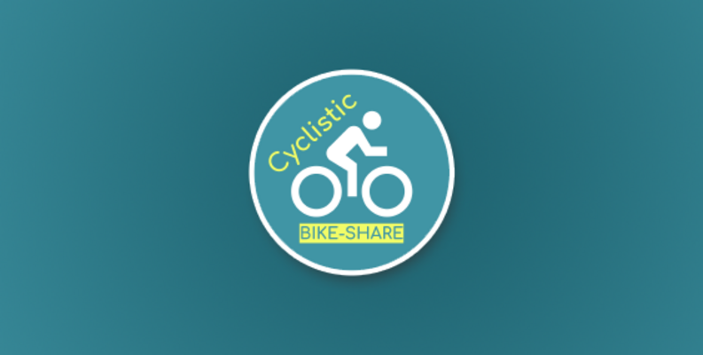
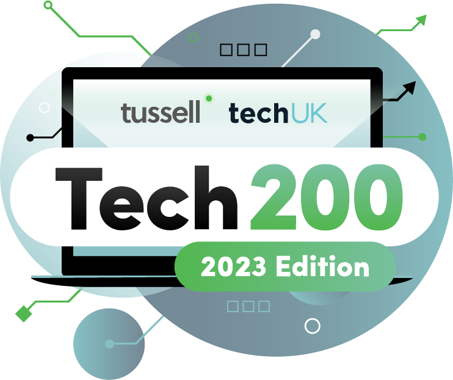

Investigating Meteorite Landings
Skills: Python, Jupyter Notebook, EDA, Data Wrangling, Data Visualisation, Data Analysis
In this project, I achieved 81% on a Python data analysis assessment as part of my Master's.
The task involved selecting an open dataset of interest and conducting data analysis using Python.
I chose a dataset of recorded meteorite landings and my focus was to clean the dataset extensively and
then, use EDA and data visualisation to gain a solid understanding of the data.

Cyclistic Study
Skills: R, SQL, Tableau, Jupyter Notebook, EDA, Data Wrangling, Data Analysis
This project was the final part of Google's Data Analytics Professional Certificate.
It brought together all learned hard skills such as R, SQL and Tableau, whilst introducing
the data analysis process. I chose a case study based on a fictional bike ride-share programme
where the problem was how to use data to convert casual riders into annual members.
Strategic Suppliers
Skills: SQL, Tableau, Data Cleaning, Data Visualisation, Data Analysis
In this project, I created a flagship report for Tussell, focusing on strategic suppliers to the UK government.
My role involved collecting and cleaning the data using SQL to ensure it was ready for analysis. Utilising Tableau, I
then visualised the data, creating compelling and informative visual representations.
Additionally, I crafted the "story" of the report using Tableau, drawing insightful conclusions from the data and visualisations.

Tech200
Tools: SQL, Tableau, Data Cleaning, Data Analysis
In this project, I created Tussell's Tech200 report, which focuses on the top 200
fastest growing technology companies. My responsibilities included collecting and cleaning
the data for each company to ensure accuracy and consistency. After preparing the data, I
conducted an in-depth analysis to identify trends and key insights within the top 200 companies.